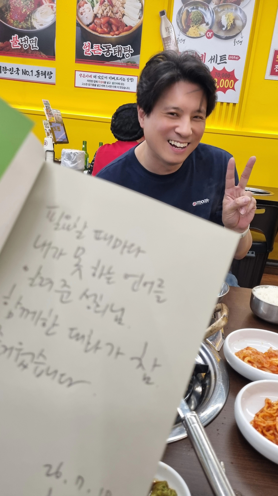

보통 공저는 10 나누기 2입니다. 부담을 나눠 갖는 방식이죠.
《UX의 언어들》은 달랐습니다. 10 곱하기 2로 썼습니다. 같은 영역을 기획자와 디자이너가 함께 해석하고, 함께 표현했습니다. 호흡이 맞지 않으면 불가능한 방식이죠.
15년 지기 신행철님과도 책으로 손발을 맞추는 건 처음이라 처음엔 막막했습니다. 그래서 저희가 가장 잘하는 방식으로 접근했습니다.
온라인 제품을 만들듯이...
서로의 목표를 맞추고
책의 독자를 정하고
제목과 목차를 확정했습니다.
글에 들어갈 소재를 정한 후 취재를 하고
글을 쓰고 서로 리뷰를 하고
한 명은 글의 흐름을, 한 명은 비주얼을 만들었습니다.
그렇게 끝이 보이지 않던 것이 조금씩 형태를 갖춰가며 《UX의 언어들》이 완성되었습니다.
원래 책 쓰기는 혼자만의 싸움이지만, 중간중간 카페에서 방향을 점검하고, 가끔은 순댓국에 소주를 기울이는 시간이 있었기에 책을 만드는 시간이 외롭지 않았습니다.
어제는 출간 된 책을 가지고 축하주와 저자 사인을 나눴습니다. 기쁨이 2배더군요.

이렇게 프로덕트쟁이 둘이 함께 만든 책이 어떨지 궁금하지 않으신가요? 《UX의 언어들》로 확인해보세요.